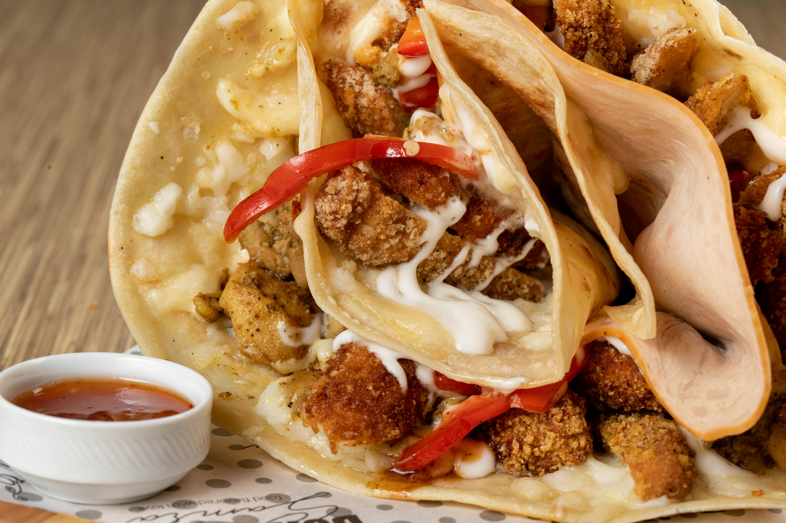

Creamy Chicken Enchiladas

DESCRIPTION
These enchiladas are a soul-warming twist on a classic, replacing heavy red sauces with a velvety green chili cream sauce. The combination of tender shredded chicken and sautéed spinach creates a filling that is both hearty and fresh.
The secret to this dish lies in the texture; by lightly frying the tortillas before filling them, you create a barrier that prevents them from becoming soggy. When smothered in Monterey Jack cheese and baked, the result is a rich, bubbly masterpiece that balances mild heat with cooling creaminess.
INGREDIENTS
- 10 to 12 Flour or corn tortillas
- 3 cups Cooked chicken, shredded
- 2 cups Fresh baby spinach, chopped
- 16 oz Salsa verde (green enchilada sauce)
- 8 oz Sour cream
- 3 cups Shredded Monterey Jack cheese
- 1 small White onion, finely diced
- 2 cloves Garlic, minced
- 1 tbsp Olive oil
- 1/2 tsp Ground cumin
- 1/4 cup/ Fresh cilantro, chopped
STEPS TO COMPLETE THE DISH
- Sauté the onions, garlic, and spinach in olive oil until the spinach is wilted.
- In a bowl, mix the shredded chicken with the sautéed vegetables and cumin.
- In a separate bowl, whisk together the salsa verde and sour cream to create the sauce.
- Spread a small amount of sauce in the bottom of a 9x13 baking dish.
- Fill each tortilla with the chicken mixture and a sprinkle of cheese, then roll tightly.
- Place the rolls seam-side down in the dish and pour the remaining sauce over the top.
- Top with the remaining cheese and bake at 350°F for 25 minutes until golden.
Home